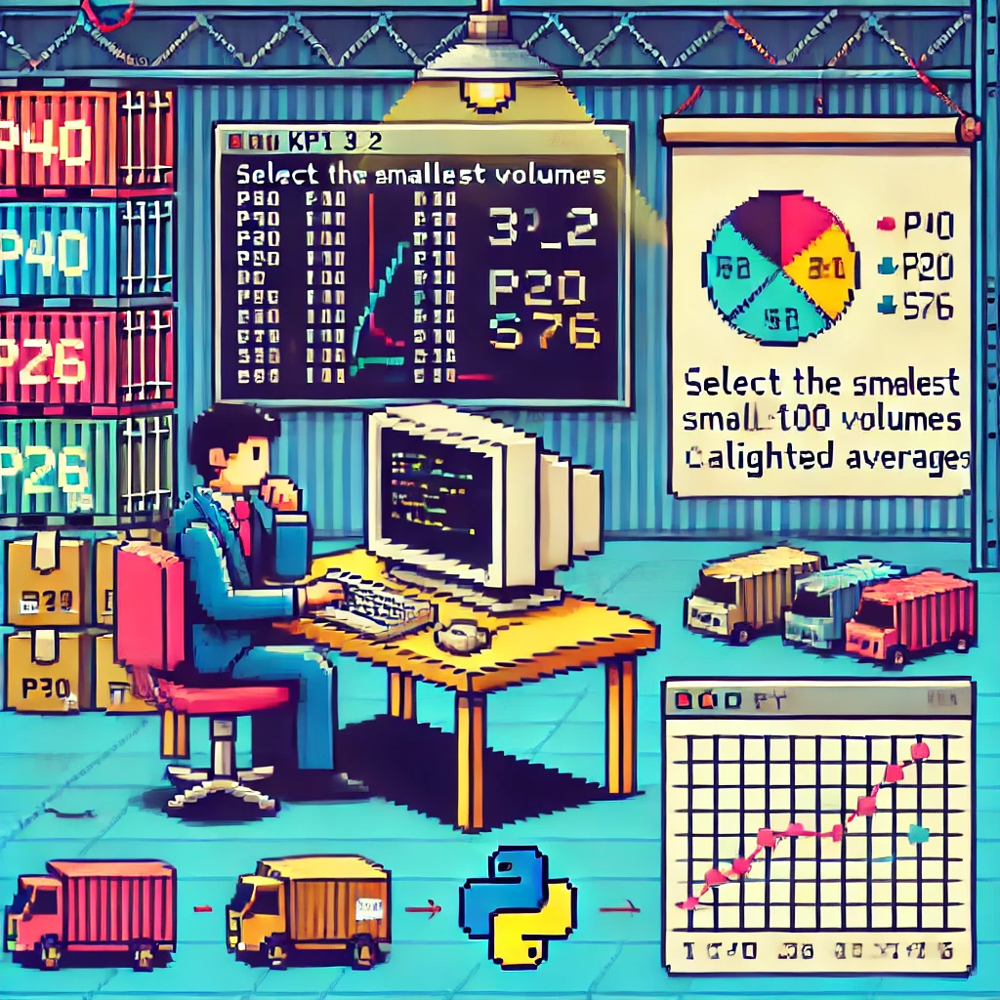

Analyse et Ajustement de KPI
Objectif
Analyse d'un script Python générant des KPI sous format PDF afin d'identifier l'origine d'une chute soudaine d'un indicateur clé. Vérification du mode de calcul du KPI concerné et présentation des conclusions au chef du magasin.
Documents
Technologies
Python
SCI
Compétences acquises
- Gérer le patrimoine informatique
- Répondre aux incidents et aux demandes d’assistance